Hex Map 5.0.0
New Input System
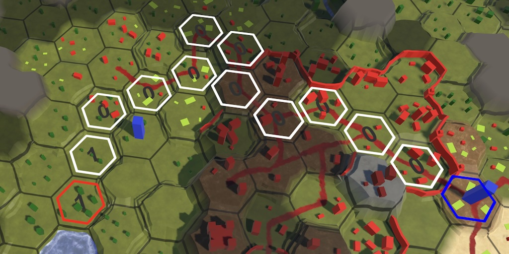
This tutorial is made with Unity 6000.3.1f1 and follows Hex Map 4.1.0.
Active Input Handling
This time we upgrade our project to Unity 6.3. The upgrade won't cause any issues, but the old Input Manager is now marked for deprecation and we get a warning in the console about that. So we're going to replace it with the new Input System package.
We begin by enabling both systems, by going to Project Settings and changing Player / Configuration / Active Input Handling to Both. This will require a restart of Unity to take effect. Then underneat the setting it will display both an error for the new system and a warning for the old system.
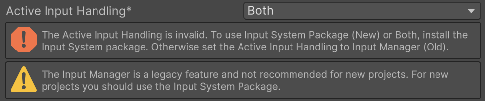
The Input System is a separate package, so install it via the Package Manager. The currently latest version is 1.17.0. After it is installed the Project Settings will have a new Input System Package category. It will ask us to create an input action asset.
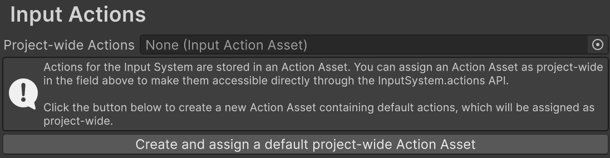
Use the button to create the asset, which will be placed in the Assets root folder. After that the settings will show the asset's input action configuration. It contains two default action maps, one for the player and one for the UI. We'll keep this default configuration for now.
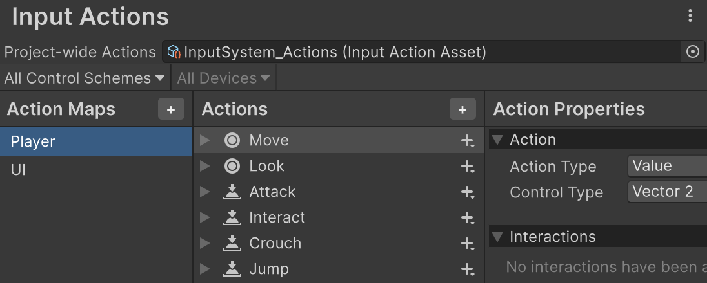
Everything still works, because the old input system is still available. But if we select the UI / EventSystem game object its Standalone Input Module component will display an error because the UI prefers to use the new input system. It still works, even though the error suggests that it is nonfunctional.
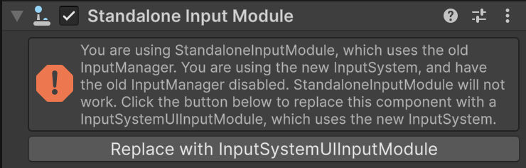
Replace the component with an Input System UI Input Module component by pressing the convenient button.
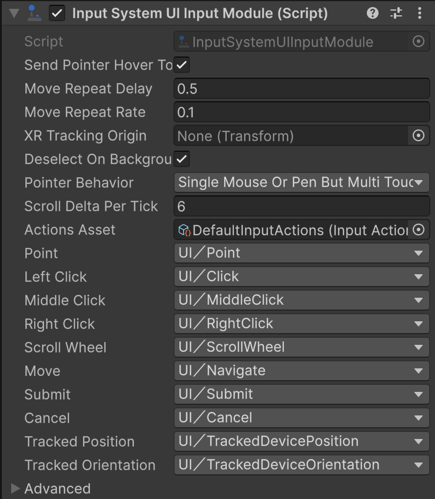
Now the UI uses the new input system. It relies of the default UI
action map that has already been set up.
Input Actions
To also make our game logic use the new input system we have to adjust the code of three components. There are multiple ways in which we can work with the new input system. We'll use the straightforward approach that is most similar to the old system.
Camera
Let's begin with the camera controls in HexMapCamera. To use the new input system we have to use the UnityEngine.InputSystem€ namespace.
using UnityEngine; using UnityEngine.InputSystem€;
We can query the input by accessing defined actions, just like we do for the old system. But now we can fetch these actions once and store a reference to them, allowing us to directly retrieve their state later. Each action is made available as an InputAction object. We'll begin with the camera's move action, so add a field for it.
InputAction moveAction;
We retrieve the action once in the Awake method, by invoking InputSystem.actions.FindAction, passing it the name of the action that we want. We can use the predefined default Move
action from the Player
action map for camera movement, which matches the controls defined for the old horizontal and vertical input axes. The action map is just a grouping for input actions, so we don't have to include the action map name when searching for an action.
void Awake()
{
swivel = transform.GetChild(0);
stick = swivel.GetChild(0);
moveAction = InputSystem.actions.FindAction("Move");
}
We can retrieve the current movement delta in Update by invoking ReadValue on our move action. It's a generic method that requires us to define the type of the value that we're reading. The move action has two dimensions so we're retrieving a Vector2 value. Its X and Y components replace our old X and Z delta variables.
// float xDelta = Input.GetAxis("Horizontal");// float zDelta = Input.GetAxis("Vertical");var moveDelta = moveAction.ReadValue<Vector2>(); if (moveDelta.x != 0f || moveDelta.y != 0f) { AdjustPosition(moveDelta.x, moveDelta.y); }
If we try this out now in play mode nothing happens because no movement input is detected. This is the case because the Player
action map is not enabled by default. The UI is functional because it made sure to enable its action map.
To enable an action map we can search for it via InputSystem, but we can also access it via the actionMap property of our move action. Then we invoke its Enable method.
moveAction = InputSystem.actions.FindAction("Move");
moveAction.actionMap.Enable();
Movement now works again, this time via the new input system. The controls might feel a bit different because the action isn't set up exactly the same. This can be tweaked by adding Processors to the action, but I'll leave it as bare-bones as it is.
The next step is to convert the rotate camera action. Begin by adding a field for it.
InputAction moveAction, rotateAction;
We'll rely on a Rotate
action to control it, so find it in Awake.
moveAction = InputSystem.actions.FindAction("Move");
moveAction.actionMap.Enable();
rotateAction = InputSystem.actions.FindAction("Rotate");
We get the rotation delta by invoking ReadValue on the action just as for movement, but in this case we're reading a single float value.
float rotationDelta = rotateAction.ReadValue<float>();
Trying this will result in errors because there is no Rotate
action. So we create it by adding a new action to the Player
action map via the project settings, naming it Rotate
. Its Action Type is Button by default but should be set to Value. Then its Control Type must be set to Axis. Then use its Add Positive\Negative Binding context or + menu option to give it an 1D Axis binding and delete its default <No Binding>
.
The 1D axis has a negative and a positive binding. Use their Path properties to link them to the Q and E buttons. Also enable their Keyboard&Mouse option under Use in control scheme to indicate that these bindings are for keyboard and mouse interactions. Then you can duplicate both bindings for the alternative , and . bindings.
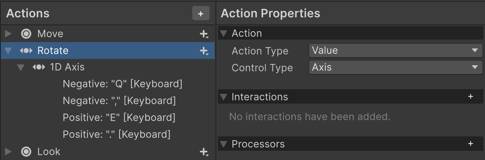
Now camera rotation is also controlled via the new input system.
Finally, we also convert the zoom action, for which we've been using the mouse scroll wheel. Add a field for it.
InputAction moveAction, rotateAction, zoomAction;
Find the Zoom
action in Awake.
rotateAction = InputSystem.actions.FindAction("Rotate");
zoomAction = InputSystem.actions.FindAction("Zoom");
And read its value in Update to get the zoom delta. We're using a delta action for this, which has two dimensions, so we have to read a Vector2 value. We only need its Y component.
float zoomDelta = zoomAction.ReadValue<Vector2>().y;
There is no default Zoom
action so we create it ourselves. Its Action Type is Value and its Control Type is Delta. Set its binding to Scroll [Mouse]. Again, indicate that it's for the Keyboard&Mouse control scheme.
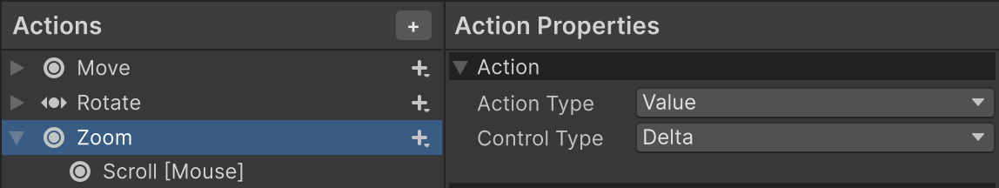
Now the camera is fully controlled via the new input system.
Map Editor
The next component that we upgrade is HexMapEditor. It currently directly checks the mouse position and buttons to support map editing. Have it use the namespace and give it fields for an interact action and a position action.
InputAction interactAction, positionAction;
Find the Interact
and Position
actions in Awake.
void Awake()
{
…
interactAction = InputSystem.actions.FindAction("Interact");
positionAction = InputSystem.actions.FindAction("Position");
}
Now in Update instead of checking whether mouse button 0 is held down we check whether the interact action is in progress, via its inProgress property.
if (interactAction.inProgress)
{
HandleInput();
return;
}
And we get the cursor position in GetCellUnderCursor by reading a Vector2 value from the position action.
HexCell GetCellUnderCursor() => hexGrid.GetCell( Camera.main.ScreenPointToRay(positionAction.ReadValue<Vector2>()), previousCell);
There already is an Interact action, but it's not set up like we want. Replace its bindings with a single Left Button [Mouse] binding that does not have any Interactions nor Processors. Its existing binding doesn't work for dragging. Then add a new Position action, with its Action Type set to Value and its Control Type set to Vector 2, with a Position [Mouse] binding. This allows us to edit the map via the new input system. Also set their control scheme.
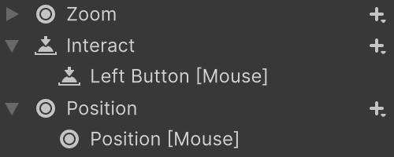
Next, we need actions to create and destroy a unit. Adds fields for them.
InputAction createUnitAction, destroyUnitAction;
And find their actions in Awake. We'll create dedicated actions for them, named CreateUnit
and DestroyUnit
.
interactAction = InputSystem.actions.FindAction("Interact");
positionAction = InputSystem.actions.FindAction("Position");
createUnitAction = InputSystem.actions.FindAction("CreateUnit");
destroyUnitAction = InputSystem.actions.FindAction("DestroyUnit");
Now in Update instead of checking the U and LEFT SHIFT keys directly, we instead check whether the actions were performed, via their WasPerformedThisFrame method. We first check if the destroy action was performed, and if so invoke DestroyUnit and return. If the destroy action wasn't performed then we check the create action and it that one was performed we invoke CreateUnit and return.
// if (Input.GetKeyDown(KeyCode.U))// {// if (Input.GetKey(KeyCode.LeftShift))// {// DestroyUnit();// }// else// {// CreateUnit();// }// return;// }if (destroyUnitAction.WasPerformedThisFrame()) { DestroyUnit(); return; } if (createUnitAction.WasPerformedThisFrame()) { CreateUnit(); return; }
Add a CreateUnit
action, with its Action Type set to the default Button. Set its biding to the U
key. Then add a DestroyUnit
action as well, also a button. Remove its default binding and instead use its Add Binding With One Modifier context or + menu option to create a modified binding. Set its modifier binding to the SHIFT key and set its regular binding to the U key.
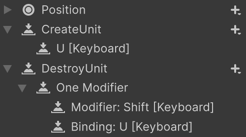
Now unit creation and destruction is also handled via the new input system. Note that by default both actions are performed when SHIFT+U is pressed. We could enable the input consumption option of the input system to make the modified action claim the action, but this is not needed because we first check for the destroy action and if that is performed we no longer check for creation.
Game UI
The last component that we have to adjust is HexGameUI, which currently relies on the mouse for controlling units. Make it use the namespace and add fields for select, command, and position actions. Then find these actions in a new Awake method.
InputAction selectAction, commandAction, positionAction;
void Awake()
{
selectAction = InputSystem.actions.FindAction("Interact");
commandAction = InputSystem.actions.FindAction("Command");
positionAction = InputSystem.actions.FindAction("Position");
}
Replace checking whether mouse button 0 or 1 was pressed down in Update with checking whether the select or command actions were performed this frame.
if (selectAction.WasPerformedThisFrame())
{
DoSelection();
}
else if (selectedUnit)
{
if (commandAction.WasPerformedThisFrame())
{
DoMove();
}
else
{
DoPathfinding();
}
}
And read the position action's value in UpdateCurrentCell instead of checking the mouse position directly.
HexCell cell = grid.GetCell( Camera.main.ScreenPointToRay(positionAction.ReadValue<Vector2>()));
The interact and position actions are already defined. The new Command
action is for commanding units to move. Create it by duplicating the Interact action and changing its binding to Right Button [Mouse].
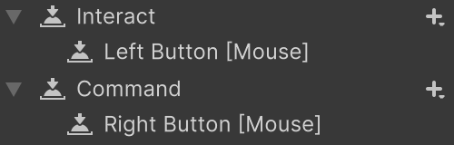
We now fully rely on the new input system. We can clean up the Player action map by removing all unused actions.
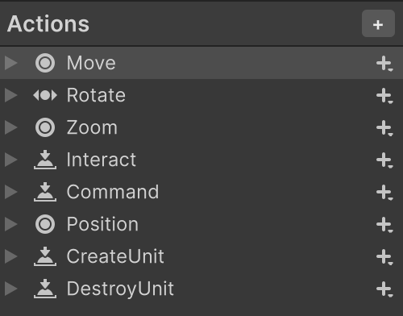
Playeractions.
As the old input system is no longer used we can set the project setting Active Input Handling to Input System Package (New) to completely remove the old system.
The next tutorial is Hex Map 5.1.0.